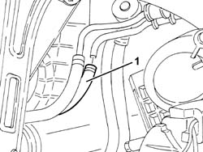

4130B76 Rubber PIPE from RIGID RETURN PIPE to HEAT EXCHANGER - R.R. Includes bleeding air
- Path
- Procedures > 41 STEERING > 4130 POWER ASSISTED STEERING > 4130B power steering hydraulic sytem > 4130B76 Rubber PIPE from RIGID RETURN PIPE to HEAT EXCHANGER - R.R. Includes bleeding air
- Kind
- repair procedure (removal / refitting; the operation number is the code)
- Applies to
- engines: 1.9 JTD 8v , 2.4 JTD 10v; all production periods
- Interactive page
- https://sloeber94.github.io/elrnDB-a156/en/#/3238149
Applies to: engines: 1.9 JTD 8v , 2.4 JTD 10v; all production periods
 Removing
Removing
 Refitting
RefittingPlace the vehicle on a ramp.
Drain the power steering fluid from the reservoir using a suitable syringe.
4450B10 Front WHEEL (one) - R.R.
7055B64 Engine compartment DUST shield in front wheel arch (one), left or right - R.R.
Pull up the left front wheel arch partly.
1008A42 gear box left rigid mount - r r
1008B30 gearbox side mount flexible block - replace
1. Loosen the bands and remove the rubber pipe from the rigid return pipe to the heat exchanger.

Applies to: engines: 1.9 JTD 8v , 2.4 JTD 10v; all production periods
Refitting
RemovingFit and connect the rubber pipe on the rigid return pipe to the heat exchanger.
1008B30 gearbox side mount flexible block - replace
1008A42 gear box left rigid mount - r r
Refit the left wheel arch and secure.
7055B64 Engine compartment DUST shield in front wheel arch (one), left or right - R.R.
4450B10 Front WHEEL (one) - R.R.
Fill the power steering circuit with the recommended fluid.
 | Type | Component | Name | Qty. |
|---|---|---|---|---|
- | Fluid | POWER ASSISTED STEERING CIRCUIT | TUTELA GI/A | - |
Bleed the power steering system as described below.
With the front wheels raised off the ground, with the engine switched off, carry out 4-5 complete steering wheel rotation cycles (left and right).
Check and, if necessary, top up the fluid level in the reservoir.
Position the vehicle on the ground and start up the engine.
Carry out 4 - 5 complete steering wheel rotations (right and left).
Top up the fluid level in the reservoir.